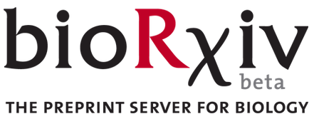
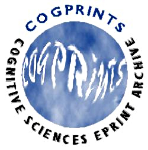

Publish where you want
Publish in open journals, or in the journal of your choice and archive a free copy.
You don’t have to sacrifice quality or academic freedom to publish openly.
There are many high-quality open access journals. But if you can't find what you deem a suitable open access venue, it's important to remember that open publishing is not restricted to these journals. You can publish in any journal you like and make a copy of your manuscript available (self-archive) on your personal website or in an open repository.
'But isn't that illegal'?
No, not in most cases. According to SHERPA/RoMEO , where authors can check the policy of specific journals, ~78% of publishers allow authors to openly archive a version of their published manuscript. The archivable version may be the manuscript prior to peer review (preprint), or after peer review (postprint), depending on the policy.
Notable examples include both Nature and Science , which allow authors to post preprints and archive their accepted manuscript in an open repository 6 months after publication.
'Where can I archive'?
Several preprint/postprint servers exist dedicated to a variety of research fields (non-exhaustive list):
 Mathematics,
Physics, Astronomy, Computer Science, Quantitative Biology,
Statistics, & Quantitative Finance (Cornell University Library)
Mathematics,
Physics, Astronomy, Computer Science, Quantitative Biology,
Statistics, & Quantitative Finance (Cornell University Library)

Biological & Biomedical Sciences (Cold Spring Harbor
Laboratory)

All
sciences (CERN)
Social sciences (Social Sciences Electronic Publishing Inc.)

Biological, Physical, Mathematical, & Social Sciences pertinent to the
study of cognition (University of Southampton, Dr. Stevan Harnad)
'What if the publisher won't let me archive?'
Some publishers have no stated policy or do not permit self-archiving. Don’t worry, you still have options:
- Ask your publisher about their archiving policy, if not stated.
- Question if your publisher has the rights they’re claiming. Some publishers try to claim rights over all previous versions of an accepted article. Copyright expert, Charles Oppenheim, explains why this is a questionable practice.
- Negotiate your right to post your article online. (See ' Take back control' for more info.)
- Consider publishing elsewhere, if they won’t budge.